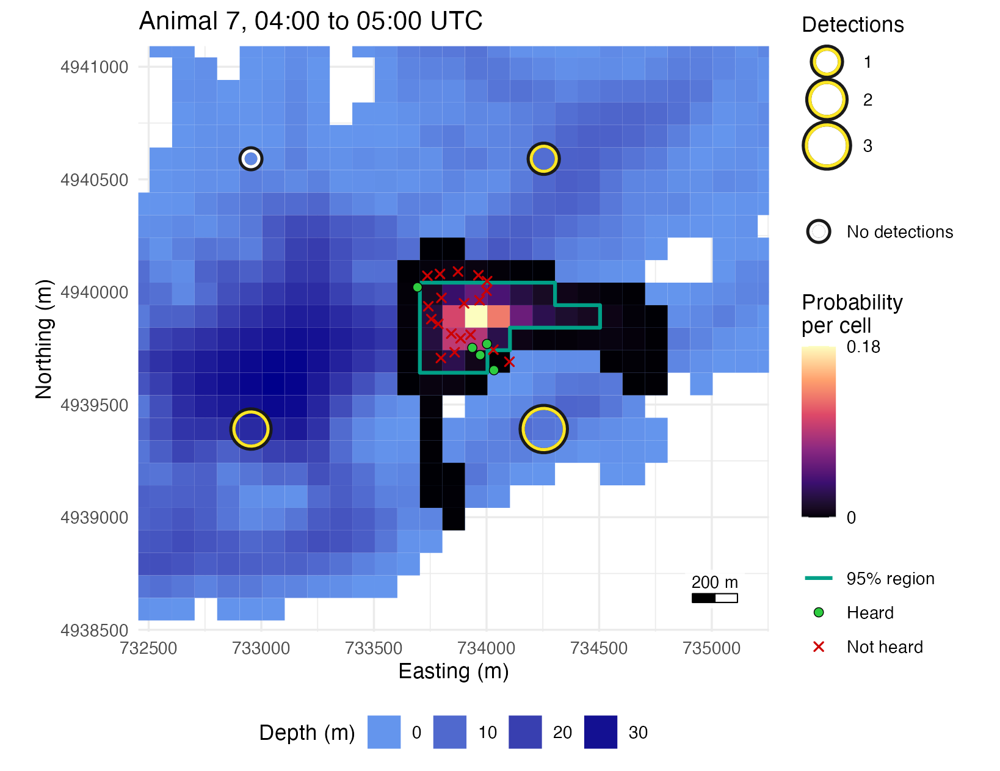
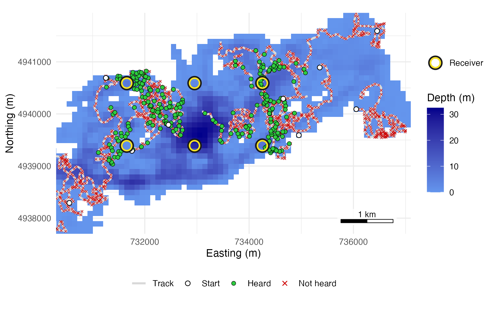
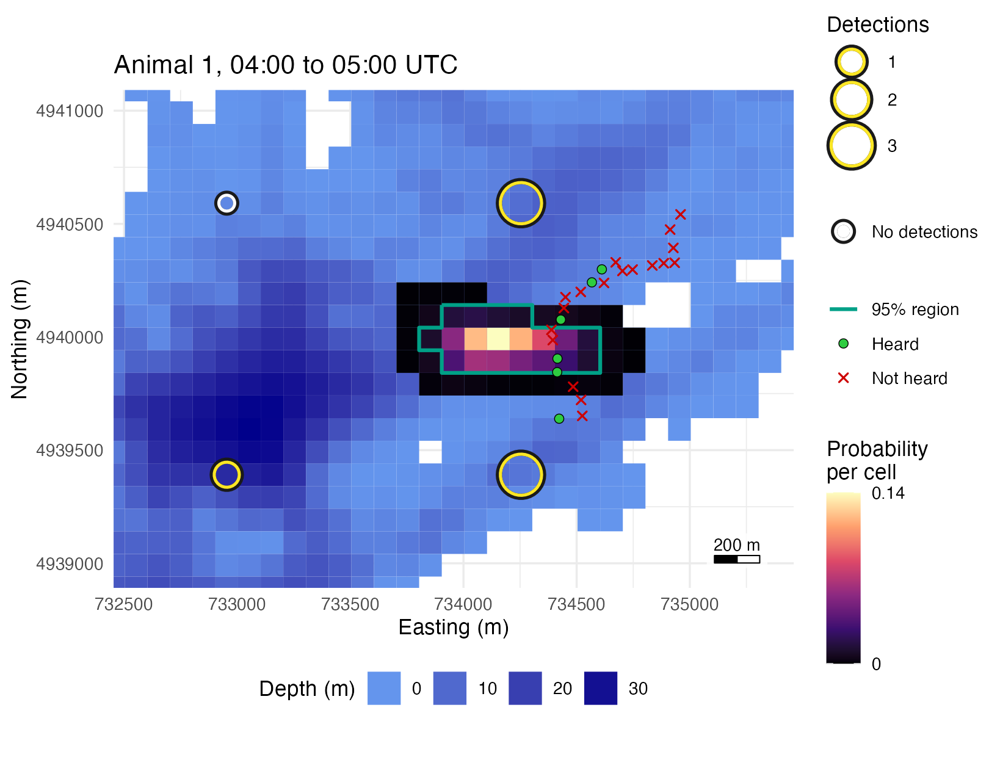

Simulate and score an array step by step
simulate-detections.Rmdevaluate_array() runs a whole simulation in one call.
This page runs it one step at a time, from tracks to location surfaces
and scores. Figure 1 is the location surface of one animal-hour, which
section 6 builds step by step.

Figure 1. The location surface of one animal-hour of the
reference run of evaluate_array() (20 animals over 6 hours)
on the 20-receiver grid, rebuilt step by step in section 6, with the
animal’s true transmissions in the hour.
The 95% region of an hourly surface holds a moving animal about half the time. The hit rate of this run, which averages over animal-hours the share of each hour’s true positions inside its region, is 0.547, because the surface treats the animal as still for the hour while it swims about 1.8 km. In the hour mapped, 16 of the animal’s 24 true positions lie inside the region.
Each step below returns a table you can inspect, change or pass to
your own code. Sections 4 and 5 add receivers that stop listening part
way through, and detection that varies from hour to hour. This page’s
code is included as simulate-detections.R in
system.file("scripts", package = "arraydesign").
The lake, the array and the range model are those of Get started: Stoney Lake at 100 m, the 20-receiver grid, and the example’s assumed range model. The first step loads the packages, reads the lake and lays the grid.
# Load the package, and ggplot2 for the maps
library(arraydesign)
library(ggplot2)
# Read the depth raster of Stoney Lake
lake <- terra::rast(system.file("extdata", "stoney_depth.tif",
package = "arraydesign"))
# Lay a grid of 20 receivers over water at least 1 m deep
deployable <- terra::ifel(abs(lake) < 1, NA, lake)
receivers <- place_receivers(deployable, n = 20, method = "grid", seed = 1)
nrow(receivers)
#> [1] 20The range model is detfield::de_logistic(), which serves
when no range test exists, and the detection field holds one probability
per receiver and water cell.
# Set the assumed d50 and d05 for receivers 1 m and 35 m deep
range_model <- detfield::de_logistic(d50 = c(250, 750), d05 = c(500, 1500),
depth = c(1, 35))
# Build the field: distances through water, then the curve at each
# distance and depth
field <- detfield::de_field(detfield::water_distances(lake, receivers),
range_model)
#> 52 of 2,304 receiver-cell pairs with p >= 0.05 have land on the
#> straight line between them; with blocked = 0 the curve is read on
#> them as if the line were clear. See `blocked` in ?de_model.
# Print the column that names the receivers of the field
field$key
#> [1] "station_id"The field is keyed by station, because the receivers have a
station_id.
1. Tracks
The tracks are those of the reference run in the arraydesignR R package, arraydesign in a browser: 20 animals for 6 hours (360 steps of 60 s) from midnight UTC, under the correlated random walk of Specifying and testing movement models. The print gives the steps taken as drawn and reflected at the shore, and the first positions.
# Build a walk: gamma steps of mean 30 m a minute, turns of sd 40 degrees
walk <- crw_model(step_mean = 30, step_sd = 15, turn_sd = 40, time_step_s = 60)
# Walk 20 animals for 360 steps of 60 s from midnight UTC
start <- as.POSIXct("2025-01-01 00:00:00", tz = "UTC")
tracks <- simulate_tracks(lake, walk, n_animals = 20, n_steps = 360,
control = track_control(start_time = start),
seed = 1)
tracks
#> <sim_tracks> 20 animals, 7220 positions, time step 60 s
#> steps: 7200; as drawn 7021, reflected at the shore 179, held 0, still 0
#> path_id step time x y cell state
#> 1 1 0 2025-01-01 00:00:00 734954.0 4939591 4011 1
#> 2 1 1 2025-01-01 00:01:00 734956.6 4939613 4011 1
#> 3 1 2 2025-01-01 00:02:00 734953.0 4939639 4011 1
#> 4 1 3 2025-01-01 00:03:00 734948.5 4939653 3843 1
#> 5 1 4 2025-01-01 00:04:00 734913.1 4939670 3843 1
#> 6 1 5 2025-01-01 00:05:00 734881.5 4939685 3842 12. Transmissions
Each animal’s tag transmits with a random delay of 120 to 180 s, a mean of 24 an hour. The chunk returns one row per transmission.
# Send a transmission every 120 to 180 s along each track
transmissions <- simulate_transmissions(tracks, tag_delay = c(120, 180),
seed = 1)
head(transmissions)
#> transmission_id path_id animal_id transmitter datetime
#> 1 1 1 1 SIM-0001 2025-01-01 00:01:00
#> 2 2 1 1 SIM-0001 2025-01-01 00:03:22
#> 3 3 1 1 SIM-0001 2025-01-01 00:05:57
#> 4 4 1 1 SIM-0001 2025-01-01 00:08:51
#> 5 5 1 1 SIM-0001 2025-01-01 00:11:03
#> 6 6 1 1 SIM-0001 2025-01-01 00:13:57
#> x y cell state min_delay max_delay
#> 1 734956.5 4939614 4011 1 120 180
#> 2 734935.0 4939660 3843 1 120 180
#> 3 734851.8 4939711 3842 1 120 180
#> 4 734858.5 4939780 3674 1 120 180
#> 5 734813.7 4939754 3674 1 120 180
#> 6 734775.9 4939751 3673 1 120 180
# Count the transmissions in all, and per animal-hour
nrow(transmissions)
#> [1] 2884
nrow(transmissions) / (20 * 6)
#> [1] 24.033333. Detections
Each receiver of the field has one chance to detect each
transmission, with the probability the field gives for the cell the
transmission was sent from. The example’s assumed range model has no
spread from hour to hour, so the trials are independent
(overdispersion = "none").
# Give each receiver one trial per transmission
sim <- simulate_detections(transmissions, field, overdispersion = "none",
seed = 1)
sim
#> <sim_detections> 466 detections of 2884 transmissions; 461 heard (16.0%)
#> datetime receiver_serial station_id transmitter animal_id
#> 1 2025-01-01 00:00:31 R020 S020 SIM-0011 11
#> 2 2025-01-01 00:00:51 R015 S015 SIM-0018 18
#> 3 2025-01-01 00:02:51 R020 S020 SIM-0011 11
#> 4 2025-01-01 00:03:19 R018 S018 SIM-0013 13
#> 5 2025-01-01 00:05:38 R020 S020 SIM-0011 11
#> 6 2025-01-01 00:05:47 R016 S016 SIM-0020 20
#> transmission_id
#> 1 1441
#> 2 2453
#> 3 1442
#> 4 1730
#> 5 1443
#> 6 2744sim$detections has the columns of a real detection file.
sim$transmissions keeps the truth: every transmission,
where it was sent from, and how many receivers heard it. The next chunk
gives, per animal, the share of transmissions heard by at least one
receiver.
# Take every transmission, with the number of receivers that heard it
truth <- sim$transmissions
# Compute the share of each animal's transmissions heard by any receiver
rate <- tapply(truth$n_detections > 0, truth$path_id, mean)
round(rate, 3)
#> 1 2 3 4 5 6 7 8 9 10 11 12
#> 0.273 0.021 0.021 0.000 0.215 0.207 0.166 0.194 0.000 0.245 0.382 0.299
#> 13 14 15 16 17 18 19 20
#> 0.193 0.095 0.161 0.000 0.048 0.354 0.000 0.329
# Give the mean, standard error and median across animals, and the
# animals never heard
c(mean = mean(rate), se = sd(rate) / sqrt(length(rate)), median = median(rate))
#> mean se median
#> 0.16007403 0.02902086 0.17931034
sum(rate == 0)
#> [1] 4These rates match step 4 of Get started and the app’s Simulation tab. An animal-hour with no detection cannot be positioned; the next chunk counts those that have one.
# Find the hour of the run in which each transmission was sent, 0 to 5
hour_of_run <- floor(as.numeric(truth$datetime - start, units = "hours"))
# Find the animal-hours with at least one detection, as a share of all 120
heard_hours <- unique(data.frame(path_id = truth$path_id,
hour = hour_of_run)[truth$n_detections > 0, ])
nrow(heard_hours) / (20 * 6)
#> [1] 0.6416667These are the animal-hours that evaluate_array() scores
in step 5 of Get started.
Figure 2 maps the north-east basin, where the heard transmissions lie
close to the receivers.
# Take the water cells, with depth as positive metres
water <- terra::as.data.frame(lake, xy = TRUE, na.rm = TRUE)
names(water)[3] <- "depth_m"
water$depth_m <- abs(water$depth_m)
# Convert the tracks to a plain table
paths <- as.data.frame(tracks)[c("path_id", "x", "y")]
# Map the tracks, misses, heard transmissions, the starts (the first
# position of each track) and receivers over the basin. The colour scale keys
# the tracks and transmissions; the shape scale keys the receivers, a dark
# ring under a coloured one
ring <- detfield::positionr_ring_colours()
ggplot(water, aes(x, y)) +
geom_raster(aes(fill = depth_m)) +
detfield::scale_fill_depth() +
geom_path(data = paths, aes(group = path_id, colour = "Track"),
linewidth = 1) +
geom_point(data = truth[truth$n_detections == 0, ], aes(colour = "Not heard"),
shape = 4, size = 0.8, stroke = 0.4, alpha = 0.8) +
geom_point(data = truth[truth$n_detections > 0, ], aes(colour = "Heard"),
shape = 21, fill = "#2ECC40", size = 1.8, stroke = 0.3) +
geom_point(data = paths[!duplicated(paths$path_id), ], aes(colour = "Start"),
shape = 21, fill = "white", size = 2, stroke = 0.5) +
scale_colour_manual(
name = NULL, breaks = c("Track", "Start", "Heard", "Not heard"),
values = c(Track = "grey85", Start = "black", Heard = "black",
`Not heard` = "red3"),
# The key draws the cross larger than the map does, so that it reads
guide = guide_legend(position = "bottom",
override.aes = list(size = c(1, 2, 1.8, 1.6),
stroke = c(0.5, 0.5, 0.3, 0.6),
alpha = 1))
) +
geom_point(data = receivers, aes(shape = "Receiver"), colour = ring[["edge"]],
size = 4, stroke = 2.2) +
geom_point(data = receivers, aes(shape = "Receiver"), colour = ring[["heard"]],
size = 4, stroke = 1.1) +
scale_shape_manual(name = NULL, values = c(Receiver = 21)) +
coord_equal(xlim = c(730300, 737100), ylim = c(4937700, 4941940),
expand = FALSE) +
labs(x = "Easting (m)", y = "Northing (m)") +
detfield::annotation_scale_bar(location = "br") +
detfield::theme_positionr()
Figure 2. Tracks and transmissions of the 20 simulated animals of the reference run over 6 hours, in the north-east basin of Stoney Lake.
4. Receivers that stop listening
When the field is built from a deployments table with
deploy_datetime and recover_datetime, a
station makes a trial only while a receiver is in the water there. Here
the receiver at S016, the deepest station of the array, is recovered
three hours into the run.
# Put every receiver in the water from a day before the run to a day after
deployments <- data.frame(receiver_serial = receivers$receiver_serial,
station_id = receivers$station_id,
x = receivers$x, y = receivers$y,
deploy_z = receivers$deploy_z,
deploy_datetime = start - 86400,
recover_datetime = start + 86400)
# Recover the receiver at S016 three hours into the run
recovered <- deployments$station_id == "S016"
deployments$recover_datetime[recovered] <- start + 3 * 3600
deployments[recovered, c("station_id", "deploy_z", "deploy_datetime",
"recover_datetime")]
#> station_id deploy_z deploy_datetime recover_datetime
#> 16 S016 24.83497 2024-12-31 2025-01-01 03:00:00The same transmissions are simulated again under a field built from the deployments, with the same seed, so the two runs differ only where the field differs.
# Build the field from the deployments, then simulate with the same
# transmissions and seed
field_recovered <- detfield::de_field(
detfield::water_distances(lake, deployments), range_model
)
#> 52 of 2,304 receiver-cell pairs with p >= 0.05 have land on the
#> straight line between them; with blocked = 0 the curve is read on
#> them as if the line were clear. See `blocked` in ?de_model.
sim_recovered <- simulate_detections(transmissions, field_recovered,
overdispersion = "none", seed = 1)
#> 1442 of 57680 transmission and station trials were not made because the
#> station was not listening: 1442 with no receiver deployed at the time, and
#> 0 in an hour the station's deployments cover for less than `min_cover`
#> (0.5). Stations: S016.The message counts the trials not made. The detections at S016 in the two runs:
5. Detection that varies from hour to hour
Range tests often vary more from hour to hour than a binomial allows:
a receiver hears well in one hour and badly in the next, for every
animal at once. detfield::de_model() adds that spread as a
standard deviation on the logit scale for each station and hour. The
value of 1 below is assumed; no range test of the example measured
it.
# Add a station-hour sd of 1 on the logit scale to the range model
spread_model <- detfield::de_model(range_model, sigma = list(station_hour = 1))
# Build its detection field
field_spread <- detfield::de_field(detfield::water_distances(lake, receivers),
spread_model)
#> 52 of 2,304 receiver-cell pairs with p >= 0.05 have land on the
#> straight line between them; with blocked = 0 the curve is read on
#> them as if the line were clear. See `blocked` in ?de_model.simulate_detections() draws the spread by default. The
table compares the detection rate per animal with and without it.
# Simulate with the same transmissions and seed, with the spread drawn
sim_spread <- simulate_detections(transmissions, field_spread, seed = 1)
#> Detections share one logit effect per receiver and UTC hour, standard
#> deviation 1 (the field's sigma$station_hour); `overdispersion = "none"`
#> leaves it out.
# Compare the detection rate per animal, without and with the spread
rate_spread <- tapply(sim_spread$transmissions$n_detections > 0,
sim_spread$transmissions$path_id, mean)
round(rbind(static = summary(rate), with_spread = summary(rate_spread)), 3)
#> Min. 1st Qu. Median Mean 3rd Qu. Max.
#> static 0 0.021 0.179 0.160 0.252 0.382
#> with_spread 0 0.019 0.160 0.161 0.244 0.424The spread leaves the mean detection rate per animal almost unchanged (0.161 against 0.160) and widens the range across animals (highest 0.424 against 0.382).
6. Counts, location surfaces and scores
The detfield R package takes the simulated detections as it takes real ones. The first step is a listening table: when each receiver was in the water.
# Set every receiver listening from a day before the run to a day after
listening <- data.frame(receiver_serial = receivers$receiver_serial,
station_id = receivers$station_id,
deploy_datetime = start - 86400,
recover_datetime = start + 86400)detfield::bin_detections() counts the detections per
animal, receiver and hour, given when each receiver listened.
y is the detections and n the transmissions
expected in the hour.
# Count the detections per animal, receiver and hour
counts <- detfield::bin_detections(sim$detections, listening,
tag_delay = c(120, 180))
head(counts)
#> animal_id bin_start bin_end receiver_serial station_id y n
#> 1 1 2025-01-01 2025-01-01 01:00:00 R001 S001 0 24
#> 2 1 2025-01-01 2025-01-01 01:00:00 R002 S002 0 24
#> 3 1 2025-01-01 2025-01-01 01:00:00 R003 S003 0 24
#> 4 1 2025-01-01 2025-01-01 01:00:00 R004 S004 0 24
#> 5 1 2025-01-01 2025-01-01 01:00:00 R005 S005 0 24
#> 6 1 2025-01-01 2025-01-01 01:00:00 R006 S006 0 24
#> listening
#> 1 TRUE
#> 2 TRUE
#> 3 TRUE
#> 4 TRUE
#> 5 TRUE
#> 6 TRUEdetfield::location_surface() turns the counts into the
probability that the animal was in each water cell, one surface per
animal-hour.
# Compute one surface per animal-hour with a detection
surfaces <- detfield::location_surface(counts, field, overdispersion = "none")score_surfaces() measures the surfaces against the true
transmissions. It scores any surfaces whose true positions you know,
such as those of a range model you fitted with other settings.
# Score the error and hit rate of each surface against the truth
score <- score_surfaces(surfaces, truth)
score
#> <surface_score> 77 animal-bins of 16 animals; 95% credible regions
#> error of the mode: median 402 m, 90th percentile 1077 m
#> error of the mean: median 394 m, 90th percentile 737 m
#> hit rate 0.547: share of the truth inside the 95% regions (a calibration
#> check)
#> 95% interval 0.476 to 0.619 (SE 0.028 clustered by animal, the one-way
#> floor; 16 animals and 6 bin starts; t with 5 df); regions hold 0.952
#> on average
#> median region 440,000 m^2
head(score$bins[c("animal_id", "bin_start", "n_truth", "error_mean_m",
"in_region", "area_m2")])
#> animal_id bin_start n_truth error_mean_m in_region area_m2
#> 1 1 2025-01-01 00:00:00 24 191.70375 0.4166667 260000
#> 2 1 2025-01-01 01:00:00 24 280.93009 0.8333333 550000
#> 3 1 2025-01-01 02:00:00 24 57.09858 0.5000000 250000
#> 4 1 2025-01-01 03:00:00 23 146.91375 0.5217391 270000
#> 5 1 2025-01-01 04:00:00 24 458.34200 0.1666667 190000
#> 6 1 2025-01-01 05:00:00 24 433.74735 0.8333333 1060000Figure 1 maps one animal-hour. The next chunk picks it: of the animal-hours heard by the most receivers, the one whose share of true positions inside its 95% region is nearest the run’s hit rate.
# Count the receivers that heard each animal-hour
heard_by <- aggregate(y ~ animal_id + bin_start, data = counts,
FUN = function(detections) sum(detections > 0))
names(heard_by)[3] <- "receivers_heard"
# Find the animal-hours heard by the most receivers, with their scores
most_heard <- merge(
heard_by[heard_by$receivers_heard == max(heard_by$receivers_heard), ],
score$bins[c("animal_id", "bin_start", "n_truth", "error_mean_m",
"in_region")]
)
most_heard
#> animal_id bin_start receivers_heard n_truth error_mean_m
#> 1 1 2025-01-01 04:00:00 3 24 458.34200
#> 2 18 2025-01-01 05:00:00 3 24 216.46319
#> 3 20 2025-01-01 01:00:00 3 23 263.74174
#> 4 7 2025-01-01 04:00:00 3 24 91.41205
#> in_region
#> 1 0.1666667
#> 2 0.2916667
#> 3 0.3478261
#> 4 0.6666667
# Pick the one nearest the run's hit rate
mapped_hour <- most_heard[which.min(abs(most_heard$in_region -
score$overall$hit_rate)), ]
mapped_hour
#> animal_id bin_start receivers_heard n_truth error_mean_m
#> 4 7 2025-01-01 04:00:00 3 24 91.41205
#> in_region
#> 4 0.6666667surface_map() is a page helper that draws one location
surface over the lake with the receivers and the animal’s true
transmissions in the hour.
# Map one animal-hour: water by depth, the surface in magma from 0 to its
# largest cell, the 95% region outlined, receivers that heard the animal as
# yellow rings sized by their detections, silent receivers as white rings,
# and the animal's true transmissions in the hour, keyed with the outline
surface_map <- function(surfaces, animal, hour, lake, receivers, detections,
truth, margin = 500) {
# Take the cells of the one surface, with their coordinates
hour_cells <- surfaces[surfaces$animal_id == animal &
surfaces$bin_start == hour, ]
hour_cells <- cbind(hour_cells, terra::xyFromCell(lake, hour_cells$cell))
# Outline its 95% region
region <- detfield::credible_region(surfaces, level = 0.95)
region <- region[region$animal_id == animal & region$bin_start == hour, ]
outline <- terra::rast(lake)
outline[region$cell] <- 1
outline <- terra::geom(terra::as.polygons(outline), df = TRUE)
# Take the true transmissions and detections of the animal in the hour
in_hour <- function(times) times >= hour & times < hour + 3600
hour_truth <- truth[truth$animal_id == animal & in_hour(truth$datetime), ]
hour_detections <- detections[detections$animal_id == animal &
in_hour(detections$datetime), ]
# Count the detections per receiver in the hour
rings <- data.frame(receiver_serial = receivers$receiver_serial,
x = receivers$x, y = receivers$y)
rings$n <- as.vector(table(factor(hour_detections$receiver_serial,
levels = rings$receiver_serial)))
heard <- rings[rings$n > 0, ]
# Zoom to the surface, the receivers that heard and the truth
in_view <- rbind(hour_cells[c("x", "y")], heard[c("x", "y")],
hour_truth[c("x", "y")])
xlim <- range(in_view$x) + c(-margin, margin)
ylim <- range(in_view$y) + c(-margin, margin)
# Take the water in view, coloured by depth with the ramp of
# detfield::scale_fill_depth(). The fill scale holds the probability, so
# the depth key is an alpha scale held at 1 whose boxes take the ramp
depth_ramp <- scales::seq_gradient_pal("cornflowerblue", "blue4")
water <- terra::as.data.frame(abs(lake), xy = TRUE, na.rm = TRUE)
names(water)[3] <- "depth_m"
deepest <- max(water$depth_m)
water$colour <- depth_ramp(water$depth_m / deepest)
depth_breaks <- pretty(c(0, deepest), n = 3)
depth_breaks <- depth_breaks[depth_breaks <= deepest]
water <- water[water$x > xlim[1] - 100 & water$x < xlim[2] + 100 &
water$y > ylim[1] - 100 & water$y < ylim[2] + 100, ]
# Draw the layers
top_prob <- max(hour_cells$prob)
cell_size <- terra::res(lake)[1]
ggplot(hour_cells, aes(x, y)) +
geom_tile(data = water, aes(fill = I(.data$colour), alpha = .data$depth_m),
width = cell_size, height = cell_size) +
scale_alpha_continuous(
name = "Depth (m)", range = c(1, 1), limits = c(0, deepest),
breaks = depth_breaks,
guide = guide_legend(position = "bottom", nrow = 1, override.aes = list(
fill = depth_ramp(depth_breaks / deepest)
))
) +
geom_tile(aes(fill = .data$prob), width = cell_size, height = cell_size) +
detfield::scale_fill_probability(
name = "Probability\nper cell", limits = c(0, top_prob),
breaks = c(0, top_prob), labels = signif(c(0, top_prob), 2)
) +
geom_path(data = outline, aes(group = interaction(.data$part, .data$hole),
colour = "95% region"), linewidth = 0.9) +
detfield::layer_receivers(rings, count = "n", size = 3, max_size = 9) +
geom_point(data = hour_truth[hour_truth$n_detections == 0, ],
aes(colour = "Not heard"), shape = 4, size = 1.6, stroke = 0.7) +
geom_point(data = hour_truth[hour_truth$n_detections > 0, ],
aes(colour = "Heard"), shape = 21, fill = "#2ECC40", size = 2,
stroke = 0.3) +
scale_colour_manual(
name = NULL, breaks = c("95% region", "Heard", "Not heard"),
values = c(`95% region` = "#00A087", Heard = "black", `Not heard` = "red3")
) +
coord_equal(xlim = xlim, ylim = ylim, expand = FALSE) +
labs(title = sprintf("Animal %s, %s to %s UTC", animal,
format(hour, "%H:%M", tz = "UTC"),
format(hour + 3600, "%H:%M", tz = "UTC")),
x = "Easting (m)", y = "Northing (m)") +
detfield::annotation_scale_bar(location = "br") +
detfield::theme_positionr()
}Animal 7 in the hour from 04:00 UTC is the animal-hour of Figure 1,
and the error of its surface mean is 91 m. The chunk below takes, of the
same most-heard animal-hours, the one with the lowest share of true
positions inside its region, and maps it with surface_map()
(Figure 3).
# Take the most-heard animal-hour with the lowest share inside its region
poor_hour <- most_heard[which.min(most_heard$in_region), ]
poor_hour
#> animal_id bin_start receivers_heard n_truth error_mean_m
#> 1 1 2025-01-01 04:00:00 3 24 458.342
#> in_region
#> 1 0.1666667
# Map the poor hour from the surfaces of this section
surface_map(surfaces, poor_hour$animal_id, poor_hour$bin_start, lake,
receivers, sim$detections, truth)
Figure 3. Animal 1 from 04:00 UTC, heard by 3 receivers: 4 of its 24 true positions lie inside the 95% region, and the surface mean is 458 m from their mean.